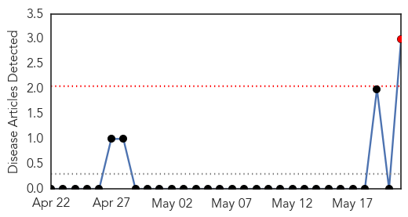
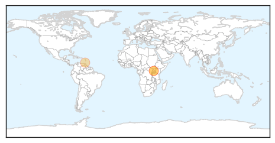
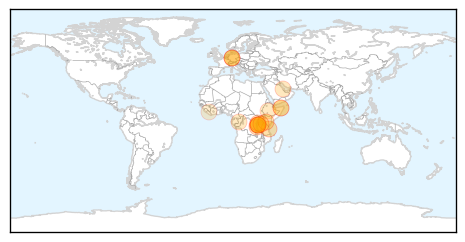

Yellow Fever
30-Day Web Trend
1 alerts, 0 warnings

30-Day Twitter Trend
0 alerts, 0 warnings

Article Locations
Article Confidences

Top Articles:
Top Tweets:
-
No tweets found for May 21, 2015
Cholera
30-Day Web Trend
5 alerts, 1 warnings

30-Day Twitter Trend
0 alerts, 0 warnings

Article Locations
Article Confidences

Top Articles:
- 0.998
- Cholera outbreak kills at least 18 in S. Sudan
- 0.981
- The most from the coast
- 0.979
- In Tanzania, UNICEF working to halt cholera outbreak among Burundian refugees
- 0.969
- Cholera outbreak in Tanzania claims 27 lives
- 0.962
- Kenya : Kenya’s cholera death toll at 65, Cabinet told
- 0.944
- Treasury releases Sh500mn to contain cholera spread
- 0.883
- Cholera outbreak kills 27 Burundian refugees in Tanzania, says UN
- 0.808
- Cholera outbreak kills 27 Burundi refugees in Tanzania: UN
- 0.806
- Cholera outbreak kills 27 Burundi refugees in Tanzania: UN
- 0.797
- Cholera outbreak triggers UNICEF relief operation at Burundi-Tanzania border
- 0.778
- Cholera outbreak kills 27 Burundi refugees in Tanzania
- 0.754
- Reuters Health News Summary
- 0.728
- Cholera outbreak kills 27 Burundi refugees in Tanzania: UN
- 0.713
- Africa needs to address neglected diseases - Opinon
- 0.664
- United Republic of Tanzania: Cholera outbreak triggers UNICEF relief operation at Burundi-Tanzania border
- 0.652
- Cholera outbreak kills 27 Burundi refugees in Tanzania: UN
- 0.596
- Cholera kills Burundi refugees from Bujumbura fighting
- 0.578
- Over 1000 Malangai Residents Drink Unsafe Water
Top Tweets:
-
No tweets found for May 21, 2015